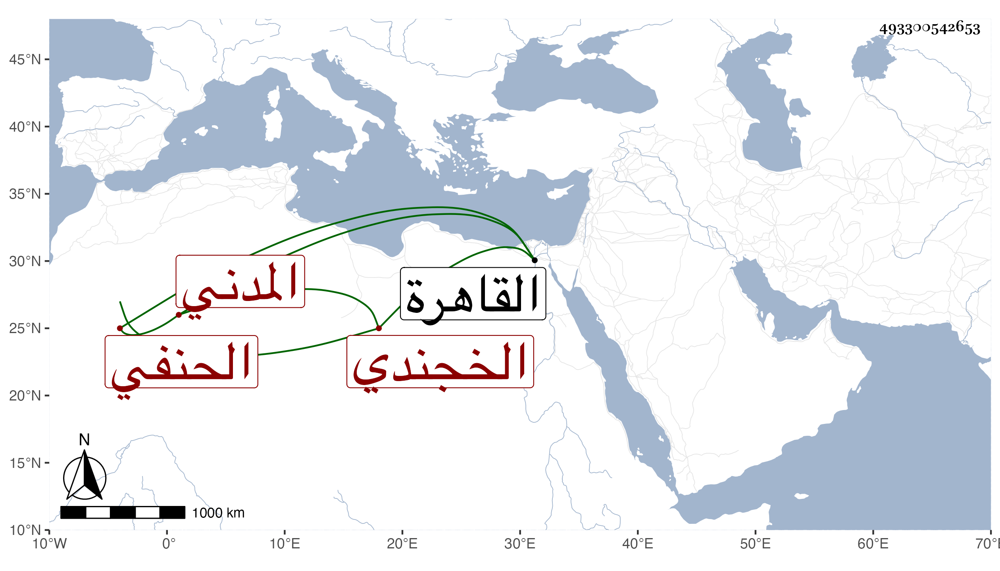

0902Sakhawi.DawLamic.ITO20230111-ara1.EIS1600.493300542653
Biography ID: 493300542653
699
محمد بن طاهر بن أحمد بن محمد بن محمد غياث الدين ويدعى غياتا الخجندي المدني الحنفي حفيد العلامة الشهير جلال الدين . ولد في الثلث الأخير من ليلة الأربعاء سابع عشري رجب سنة ست وثمانمائة وسمع على الزين المراغي وغيره واشتغل على أبيه في الفنون وبرع في العربية ، وعرف بجودة الذكاء وعلو الهمة ، ودخل القاهرة غير مرة . ومات بها في الطاعون سنة ثلاث وأربعين . ورأيت في استدعاء بخط حسين الفتحي أجاز فيه شيخنا ذكر فيه محمد بن طاهر فأظنه هذا .
